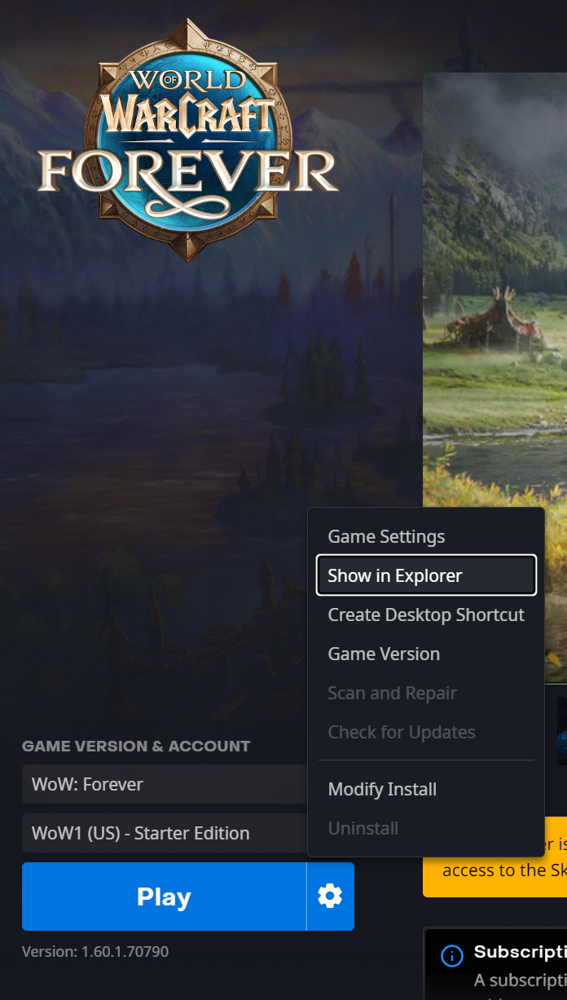

PotatoeOptimizer
Más FPS en World of Warcraft: Forever. Son 4 pasos y se tarda menos de un minuto.
La carpeta de destino se va armando conforme avanzas:
- World of Warcraft
- _forever
- Interface
- AddOns
- PotatoeOptimizer
0 de 4 pasos completados
-
1
En Battle.net, con WoW: Forever seleccionado, pulsa el engranaje junto al botón Play y elige Show in Explorer (Mostrar en el explorador).

-
2
En la ventana que se abrió, entra a
_forever, luego aInterfacey por último aAddOns.📁 World of Warcraft📂 _forever📂 Interface📂 AddOns ← aquí vas -
3
Descarga el ZIP del addon y copia la carpeta
PotatoeOptimizerdentro deAddOns.📂 AddOns📂 PotatoeOptimizer📄 PotatoeOptimizer.toc📄 core.luaSi ves una carpeta
PotatoeOptimizerdentro de otraPotatoeOptimizer, saca la de adentro y pégala directamente en AddOns. Si no, el juego no la detecta. -
4
Al entrar con tu personaje, verás este mensaje en el chat:
[PotatoeOptimizer] Configuración optimizada aplicada (5/5).Si dice menos de 5/5, no pasa nada: el resto se aplicó igual. Si no aparece nada, en la pantalla de personajes pulsa AddOns y revisa que PotatoeOptimizer esté marcado.
Cuando quieras volver a aplicarlo sin reiniciar, escribe /potato en el chat.
¡Todo listo! 🥔
Tu juego ya corre más ligero. Si algo no funciona, vuelve a revisar el paso 3.